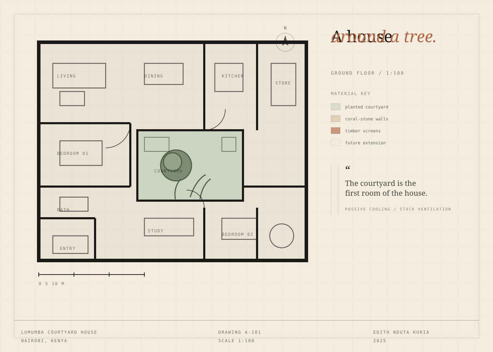

Residential · Nairobi, Kenya · 2025
Lumumba Courtyard House
A compact family home that turns its back on the road and opens entirely to a single, planted courtyard.
The question
On a typical 15-metre Nairobi plot, privacy usually arrives as a high wall. The result is a dark house that faces inward but forgets to breathe. The brief asked for a home for five, on a noisy road, without giving up light, air or a garden.
The move
One courtyard does most of the work. Rooms wrap around it in a loose U, so every living space borrows light from the centre and cross-ventilates through the plan. The street elevation is deliberately quiet: coral-stone walls, a single arched threshold and a breeze-block screen that filters views without stopping the breeze.
A 600 mm deep veranda shades the ground floor, while a stack over the stair pulls warm air out at the ridge. Rainwater from the roof is collected in a tank beneath the courtyard paving. The tree was on the site before the house was.
In a tight plot, generosity is a section problem, not a plan problem.
The lesson
This project taught me to design the threshold first — the step, the arch, the shaded edge — and let the rooms follow. Comfort is often a matter of millimetres: an eave, a gap, a piece of planting in exactly the right place.

Next Continue to the lakefront reading room